Way back in 2007, Mariam Ndagire embarked on a journey to make a Ugandan blockbuster Movie at a time when Ugandans had hardly seen a feature film written, produced, and directed by a Ugandan. Most movies back then were produced by international organizations. Mariam made her dream a reality with her groundbreaking debut, Down This Road I Walk and she never looked back.
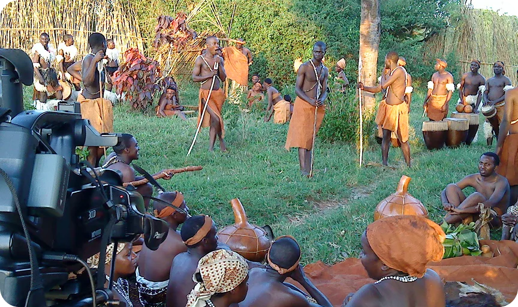
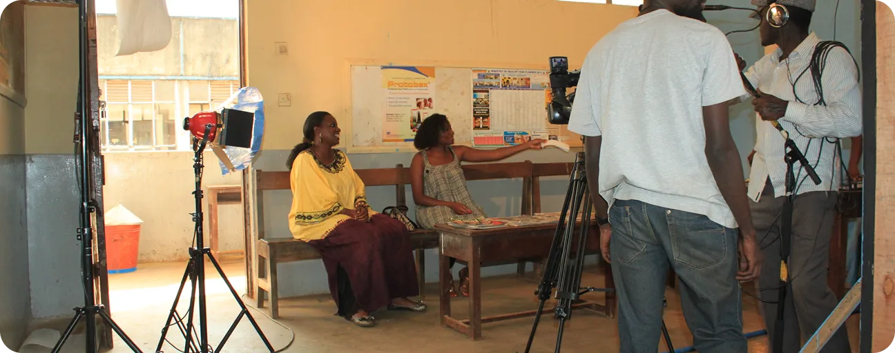
That single release revolutionized Ugandan film culture. Transforming her visionary passion into an enduring legacy, Mariam Ndagire built a cinematic home dedicated to telling authentic East African stories. Over the years, her prolific repertoire of compelling feature films, hit TV Drama Series, and theatre productions has captivated audiences across major broadcasting channels like NTV Uganda and DStv’s Africa Magic, Maisha Magic, Pearl Magic, Salt Media, Bukedde TV and more. Today, through the Mariam Ndagire Film and Performing Arts Centre (MNFPAC), she continues to inspire, nurture, and pave way for the next generation of storytellers.
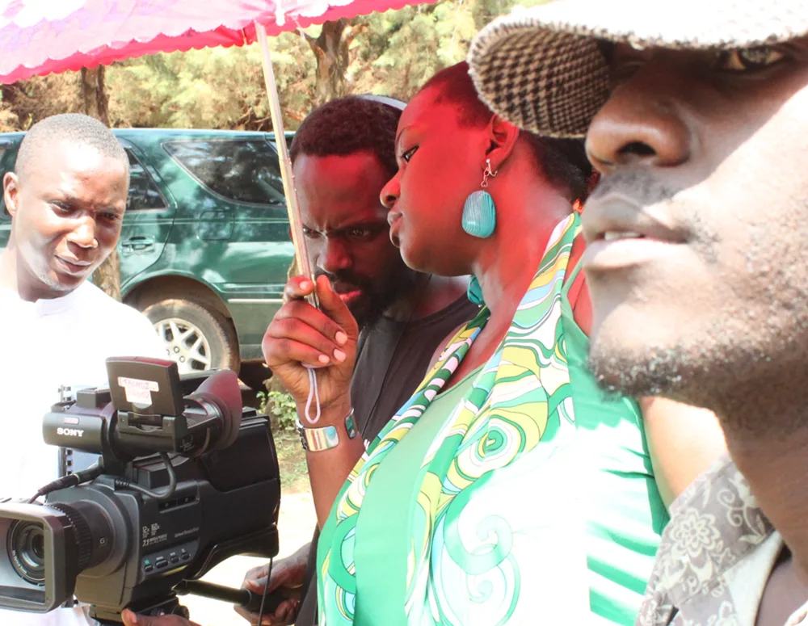
Iconic Releases & Television Hits
- Breakthrough Features: Down This Road I Walk (2007/2008), Strength of a Stranger (2008), Hearts in Pieces (2009), Where We Belong (2011), Dear Mum (2012), Belated Trouble (2013), Nsaali (2017), and My Husband's Wife (2021).
- Hit Television Dramas: Tendo Sisters, Anything But Love, J-Rose, and BA-AUNT (broadcast widely on NTV Uganda, Bukedde TV, and DStv’s Maisha Magic).
- Latest Feature Film: Longing to Belong (2026), featuring Laura Kahunde, Henry Kabanda, Annet Nandujja, and Amina Nalugwa.
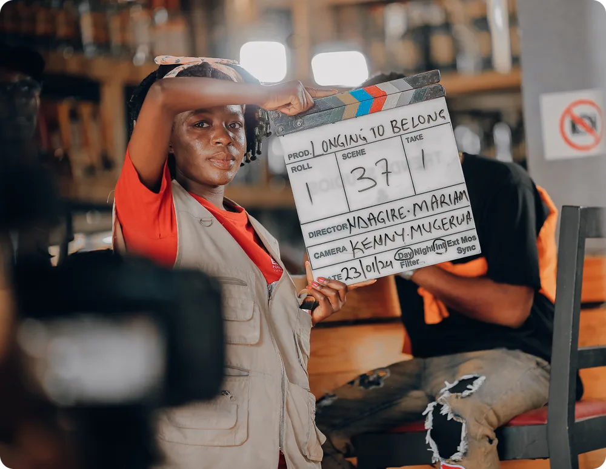
Awards & Festival Recognition
- Lifetime Achievement Award: Awarded at the 10th Uganda Film Festival (2023) in recognition of her monumental contributions to the film industry.
- Africa Magic Viewers' Choice Awards (AMVCA): Nominee Best Movie East Africa for My Husband's Wife.
- Uganda Film Festival: nominations since 2013 up to date for DEAR MUM, WHERE WE BELONG, MY HUSBAND’S WIFE & LONGING TO BELONG.
- IKON Awards: Winner Best Screen play for MY HUSBAND’S WIFE.
- Pearl International Film Festival (PIFF): Winner of Best TV Drama (BA-AUNT) and multiple wins across Best Supporting Actress, Best Actor, and Screenplay categories. NSAALI garnered 9 Nominations at the 2017 Edition.
- International Festival Screenings: Official selections at the Zanzibar International Film Festival (ZIFF) for BA-AUNT TV Series & LONGING TO BELONG, KADUNA INTERNATIONAL FESTIVAL for LONGING TO BELONG & EKITIBWA KY’OLUBUGO.
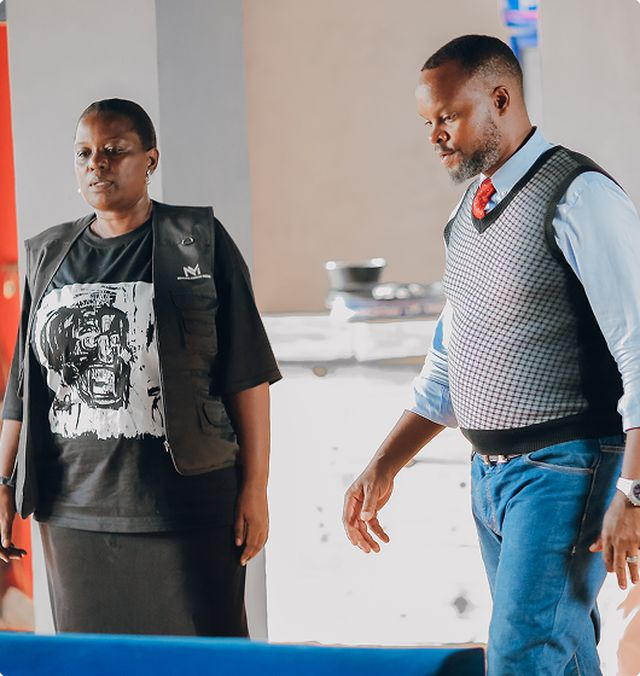
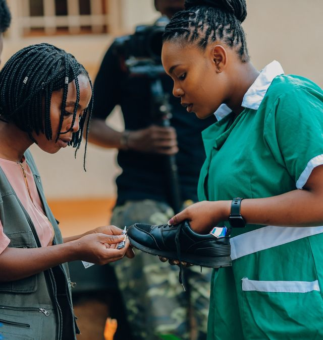
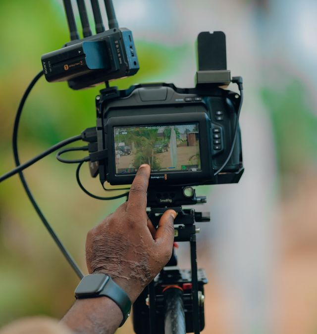
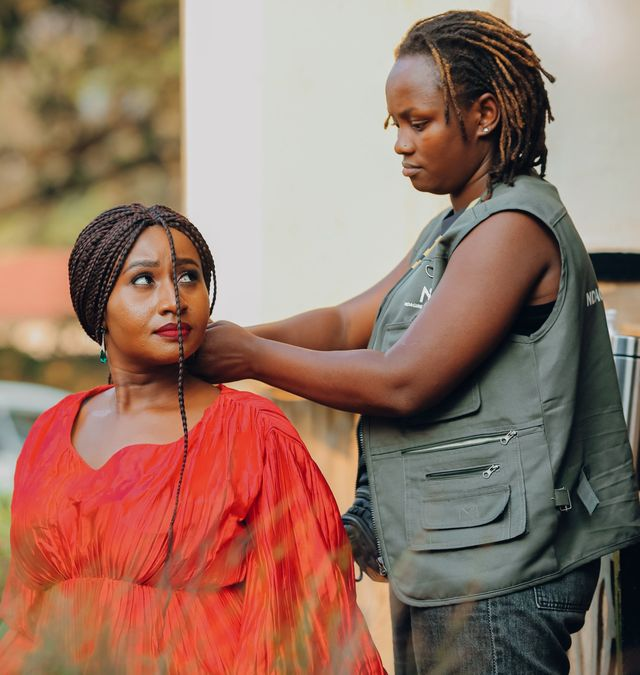
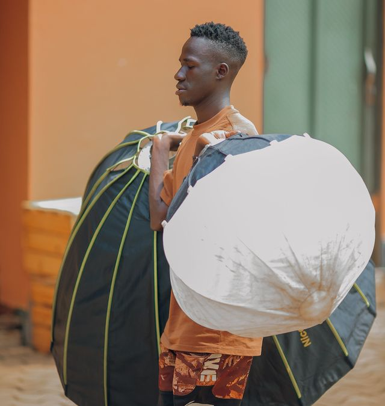
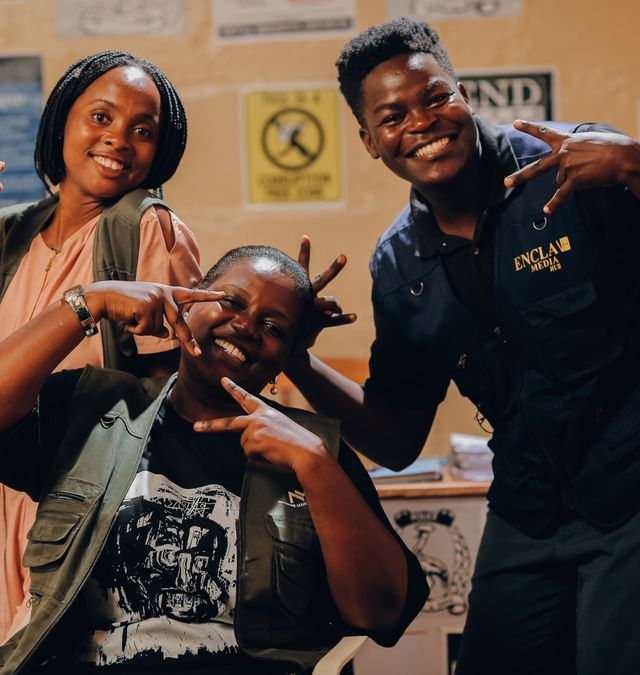
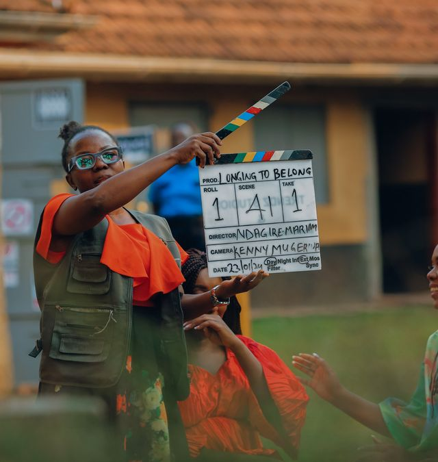
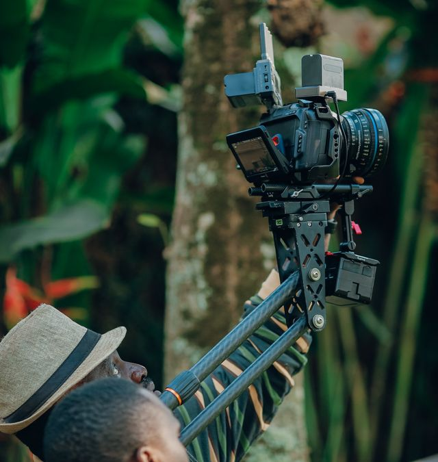
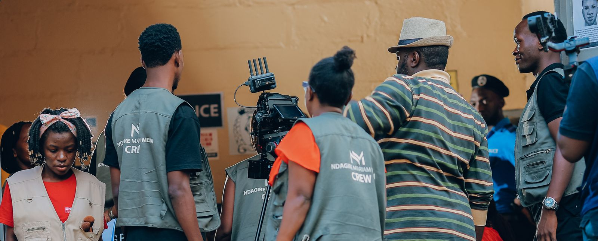
Mariam Ndagire Media is here to make more movies, deliver richer entertainment, and bring powerful dramas to your screens!
“Delivering Exceptional Entertainment”
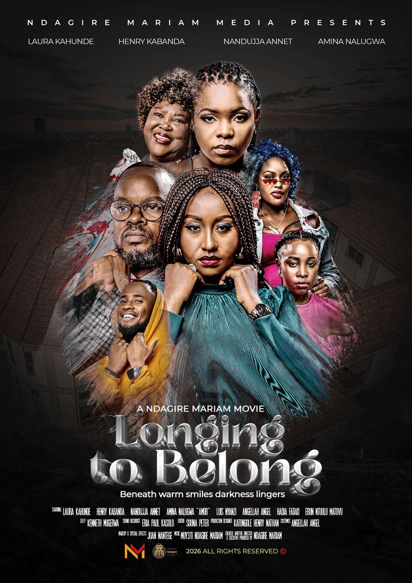
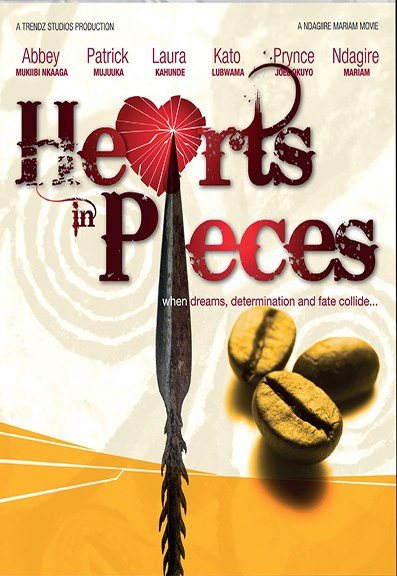
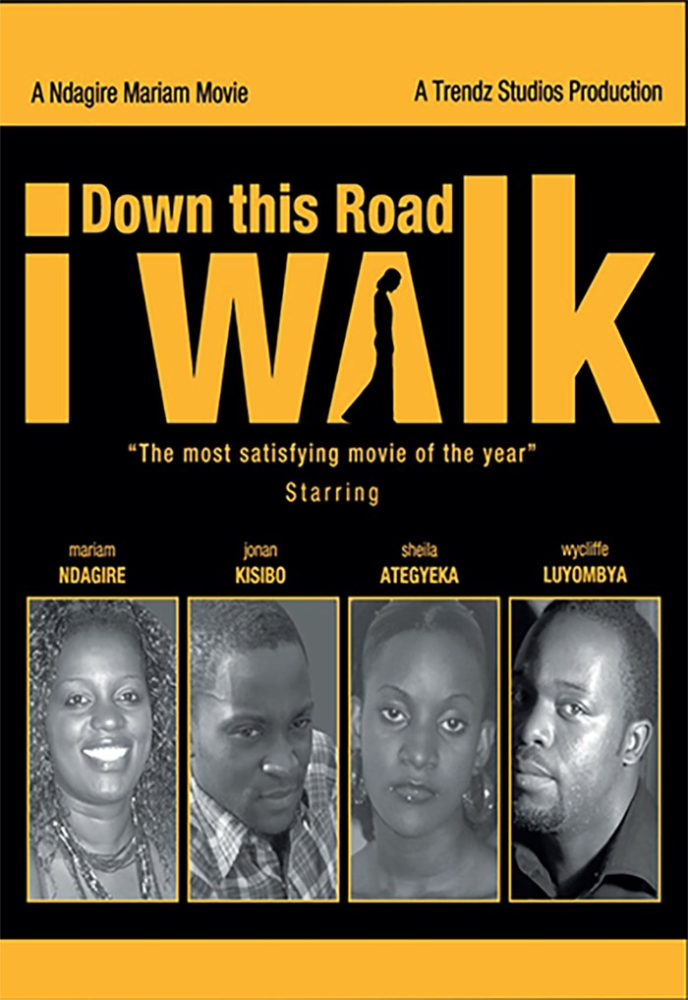
For productions and partnership, get in touch.
Contact Us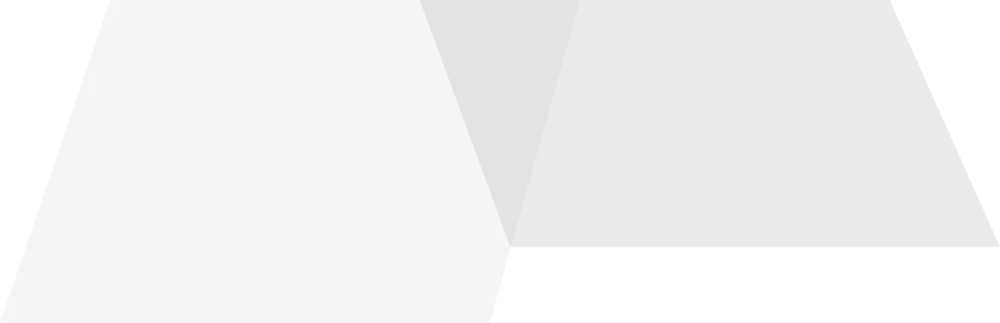